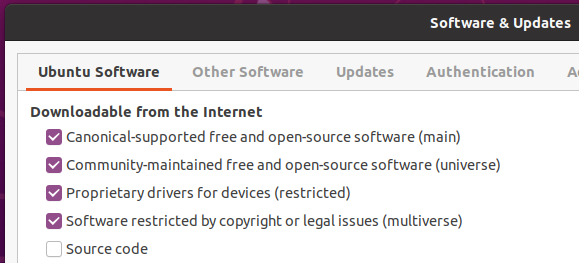

Ubuntu
Installation notes
If you have already installed Git, Latex, or any of the R or Python related packages please uninstall these and follow the instructions below to reinstall them (make sure to also remove any user configuration files and backup them if desired). In order to be able to support you effectively and minimize setup issues and software conflicts, we require all students to install the software stack the same way.
In all the sections below, if you are presented with the choice to download either a 64-bit (also called x64) or a 32-bit (also called x86) version of the application always choose the 64-bit version.
Once you have completed these installation instructions, make sure to follow the post-installation notes at the end to check that all software is setup correctly.
Ubuntu software settings
To ensure that you are installing the right version of the software in this guide, open “Software & Updates” and make sure that the boxes in the screenshot are checked (this is the default configuration).

Web browser
In DSCI 310 we will be using several tools that work most reliably on Google Chrome and Firefox (including our online quiz software), so we recommend that you use one of these browsers.
- Firefox comes preinstalled with Ubuntu, so there is not need to download anything.
- To install Chrome, go to https://www.google.com/chrome/, click on “Download Chrome” choose the deb-file, download it to your computer and click on the downloaded file to install it.
Note: If you select “open with” and try to open the file directly with the Ubuntu Software app instead of downloading it first, the software app might complain that the file is not supported.
Visual Studio Code
The open-source text editor Visual Studio Code (VS Code) is both a powerful text editor and a full-blown Python IDE, which we will use for more complex analysis. You can install VS Code either via the Snap store/Ubuntu software app through this link or via the downloadable deb-file from the VS code website https://code.visualstudio.com/download. The getting started instructions are here: https://code.visualstudio.com/docs/?dv=linux64_deb.
You can test that VS code is installed and can be opened from Terminal by restarting terminal and typing the following command:
code --versionyou should see something like this if you were successful:
1.81.1
6d9b74a70ca9c7733b29f0456fd8195364076dda
x64GitHub
In DSCI 310 we will use the publicly available GitHub.com. If you do not already have an account, please sign up for one at GitHub.com
Sign up for a free account at GitHub.com if you don’t have one already.
Git
We will be using the command line version of Git as well as Git through RStudio and JupyterLab. Some of the Git commands we will use are only available since Git 2.23, so if your Git is older than this version, we ask you to update it using the following commands:
sudo apt update
sudo apt install gitYou can check your git version with the following command:
git --versionyou should see something like this if you were successful:
git version 2.34.1Configuring Git user info
Next, we need to configure Git by telling it your name and email. To do this, type the following into the terminal (replacing Jane Doe and janedoe@example.com, with your name and email that you used to sign up for GitHub, respectively):
git config --global user.name "Jane Doe"
git config --global user.email janedoe@example.comNote: To ensure that you haven’t made a typo in any of the above, you can view your global Git configurations by either opening the configuration file in a text editor (e.g. via the command
code ~/.gitconfig) or by typinggit config --list --global.
Setting VS Code as the default editor
To make programs run from the terminal (such as git) use VS Code by default, we will modify the bash configuration file ~/.bashrc. First, open it using VS Code:
code ~/.bashrcNote: If you see any existing lines in your
~/.bashrcrelated to a previous Python or R installation, please remove these.
Append the following lines:
# Set the default editor for programs launch from terminal
EDITOR="code --wait"
VISUAL=$EDITOR # Use the same value as for "EDITOR" in the line aboveThen save the file and exit VS Code.
Note: Most terminal programs will read the
EDITORenvironmental variable when determining which editor to use, but some readVISUAL, so we’re setting both to the same value.
In some cases, VScode is not set as the default text editor for git even after appending the two lines above, so to make sure it is registered properly, also run the following from your terminal:
git config --global core.editor "code --wait"Python, Conda, and JupyterLab
Python and Conda
We will be using Python for a large part of the program, and conda as our Python package manager. To install Python and the conda package manager, we will use the Miniforge platform (read more here).
Select the appropriate link:
You can find the Mac ARM and Intel download links here: https://conda-forge.org/miniforge/. Make sure you use the Miniforge3 installers, not the other ones listed. We will assume you downloaded the file into your Downloads folder.
Once downloaded, open up a terminal and run the following command
bash ${HOME}/Downloads/Miniforge3.sh -b -p "${HOME}/miniforge3"After installation run the following commands
source "${HOME}/miniforge3/etc/profile.d/conda.sh"
conda activate
conda initAfter installation, restart the terminal. If the installation was successful, you will see (base) prepending to your prompt string. To confirm that conda is working, you can ask it which version was installed:
conda --versionwhich should return something like this:
conda 23.5.2Note: If you see
zsh: command not found: conda, see the section on Bash{:target=“_self”} above to set your default Terminal shell to Bash as opposed to Zsh.
Next, type the following to ask for the version of Python:
python --versionMake sure it returns Python 3.11.0 or greater:
Python 3.11.4Installing Python packages
conda installs Python packages from different online repositories which are called “channels”. A package needs to go through thorough testing before it is included in the default channel, which is good for stability, but also means that new versions will be delayed and fewer packages are available overall. There is a community-driven effort called the conda-forge (read more here), which provides more up to date packages. Conda-forge is already set up when we installed Miniforge3
To install packages individually, we can now use the following command: conda install <package-name>. After running that command conda will show you the packages that will be downloaded, and you can press enter to proceed with the installation. If you want to answer yes by default and skip this confirmation step, you can replace conda install with conda install -y. Also note that we may occasionally need to install packages using pip, the standard Python package manager. The installation command is very similar to that of conda: pip install <package-name>.
In the next session we will use conda to install some of the key packages we will use in DSCI 310.
JupyterLab setup
JupyterLab is a coding environment that we will be using frequently throughout the course. The JupyterLab git extension facilitates using notebooks in JupyterLab together with Git & GitHub. The spellchecker helps us correcting typos in our writing. Install them via the following commands:
conda install jupyterlab jupyterlab-git jupyterlab-spellcheckerTo test that your JupyterLab installation is functional, you can type jupyter lab into a terminal, which should open a new tab in your default browser with the JupyterLab interface. To exit out of JupyterLab you can click File -> Shutdown, or go to the terminal from which you launched JupyterLab and hold Ctrl while pressing c twice.
R, IRkernel, and RStudio
R is the second language that we will be using frequently in this course. We will use R both in Jupyter notebooks and in RStudio.
R
The version of R available in the default Ubuntu repositories is older than the one we will be using in this course. To obtain the latest R packages, we need to add a new repository which is maintained directly by the r-project. To do this, first add the key for this repository by typing the following:
wget -qO- https://cloud.r-project.org/bin/linux/ubuntu/marutter_pubkey.asc | sudo tee -a /etc/apt/trusted.gpg.d/cran_ubuntu_key.ascThen add the URL to the repository:
sudo add-apt-repository "deb https://cloud.r-project.org/bin/linux/ubuntu $(lsb_release -cs)-cran40/"Next, install r-base and r-base-dev (useful for compiling R packages from source):
sudo apt install r-base r-base-devAfter installation, type the following in a new terminal window:
R --versionYou should see something like this if you were successful:
R version 4.3.1 (2023-06-16) -- "Beagle Scouts"
Copyright (C) 2023 The R Foundation for Statistical Computing
Platform: x86_64-pc-linux-gnu (64-bit)
R is free software and comes with ABSOLUTELY NO WARRANTY.
You are welcome to redistribute it under the terms of the
GNU General Public License versions 2 or 3.
For more information about these matters see
https://www.gnu.org/licenses/.Note: See this page for additional instructions if you run into troubles while installing R.
Note: Although it is possible to install R through conda, we highly recommend not doing so. In case you have already installed R using conda you can remove it by executing
conda uninstall r-base.
RStudio
Download the Ubuntu 22 Desktop version (not Pro) of RStudio from https://posit.co/download/rstudio-desktop/. Open the file and follow the installer instructions.
Note: If you select “open with” and try to open the file directly with the Ubuntu Software app instead of downloading it first, the software app might complain that the file is not supported.
To see if you were successful, try opening RStudio by clicking on its icon or typing rstudio in a terminal.
Note: Since we installed RStudio directly from a deb file rather than from a repository or a snap package, it will not be updated when we run
sudo apt upgradeand not automatically as for snap packages. Instead, RStudio will notify you of any available updates when the program is launched.
Now we are going to change RStudio’s Insert Pipe shortcut so that it inserts the new native pipe operator |>. Go to Tools > Global Options > Code > Editing and tick the following option:

Once the change is made you can try in the RStudio console Control + Shift + m to check if works.
Finally, let’s install a common R package that you used a lot in DSCI 100 by typing the following into the console inside RStudio:
install.packages("tidyverse")IRkernel
The IRkernel package is needed to make R work in Jupyter notebooks. To enable this kernel in the notebooks, install by pasting the following command into the RStudio Console:
install.packages('IRkernel')
IRkernel::installspec()Note: If you see an error message saying “jupyter-client has to be installed…”, close RStudio and run the following line from your terminal instead
R -e "IRkernel::installspec()".
To see if you were successful, try running JupyterLab and check if you have a working R kernel. To launch JupyterLab, type the following in a terminal:
jupyter labA browser should have launched and you should see a page that looks like the screenshot below. Now click on “R” notebook (circled in red on the screenshot below) to launch an JupyterLab with an R kernel.

Sometimes a kernel loads, but doesn’t work as expected. To test whether your installation was done correctly now type library(tidyverse) in the code cell and click on the run button to run the cell. If your R kernel works you should see something like the image below:

To improve the experience of using R in JupyterLab, we will add keyboard shortcuts for inserting the common R operators <- and |>. Go to Settings -> Settings Editor. Then click JSON Settings Editor in the top right corner and click on Keyboard Shortcuts in the navigation panel to the left. You will see two panels, the right-most panel allows you to perform advanced modification of keyboards shortcuts in JupyterLab and it already contains quite a few shortcuts. We’re going to add two more shortcuts, by pasting a text snippet just before the first existing shortcut. Go ahead and create a new line just after the line that says "shortcuts": [ and paste the following:
{
"command": "apputils:run-first-enabled",
"selector": "body",
"keys": ["Alt -"],
"args": {
"commands": [
"console:replace-selection",
"fileeditor:replace-selection",
"notebook:replace-selection",
],
"args": {"text": "<- "}
}
},
{
"command": "apputils:run-first-enabled",
"selector": "body",
"keys": ["Accel Shift M"],
"args": {
"commands": [
"console:replace-selection",
"fileeditor:replace-selection",
"notebook:replace-selection",
],
"args": {"text": "|> "}
}
},After you have pasted this text, hit the small floppy disk in the top right (or Ctrl + s) to save the settings. Here is a screenshot of what it looks like with the settings saved:

To check that the extension is working, open JupyterLab, launch an R notebook, and try inserting the operators by pressing Alt + - or Shift + Ctrl + m, respectively. You could add any arbitrary text insertion command the same way, but this is all that is required for this course.
Quarto CLI
Quarto is an open-source scientific and technical publishing system that you can access from VSCode, Jupyter Lab, RStudio, or the terminal.
The RStudio version that you have downloaded is already equipped with the last version of Quarto. You can check this by opening a new document in File -> New File -> Quarto Document.
Quarto can be used outside RStudio as well, this is why we are going to install Quarto CLI. Please, download the last version of Quarto CLI for Linux.
After the installation finishes, close all the terminals you may have open. Then, open a new one and try running this command:
quarto --versionIf the installation was successful you will read the output:
1.3.450LaTeX
We will install the lightest possible version of LaTeX and its necessary packages as possible so that we can render Jupyter notebooks and R Markdown documents to html and PDF. If you have previously installed LaTeX, please uninstall it before proceeding with these instructions.
First, open RStudio and run the following commands to install the tinytex package and setup tinytex:
install.packages('tinytex')
tinytex::install_tinytex()As recommended at the end of the installation, it is important to log out and in again for TinyTex to work properly (restarting the computer also works). Once you log back in, try running the following in a terminal:
latex --versionYou should see something like this if you were successful:
pdfTeX 3.14159265-2.6-1.40.25 (TeX Live 2023)
kpathsea version 6.3.2
Copyright 2020 Han The Thanh (pdfTeX) et al.
There is NO warranty. Redistribution of this software is
covered by the terms of both the pdfTeX copyright and
the Lesser GNU General Public License.
For more information about these matters, see the file
named COPYING and the pdfTeX source.
Primary author of pdfTeX: Han The Thanh (pdfTeX) et al.
Compiled with libpng 1.6.37; using libpng 1.6.37
Compiled with zlib 1.2.11; using zlib 1.2.11
Compiled with xpdf version 4.02The above is all we need to have LaTeX work with R Markdown documents, however for Jupyter we need to install several more packages. To install the additional LaTeX packages needed for Jupyter paste the following into the new terminal instance and press enter:
tlmgr install eurosym \
adjustbox \
caption \
collectbox \
enumitem \
environ \
fp \
jknapltx \
ms \
parskip \
pdfcol \
pgf \
rsfs \
soul \
tcolorbox \
titling \
trimspaces \
ucs \
ulem \
upquote \
lwarp \
oberdiekTo test that your latex installation is working with jupyter notebooks, launch jupyter lab from a terminal and open either a new notebook or the same one you used to test IRkernel above. Go to File -> Save and Export Notebook as... -> PDF. If the PDF file is created, your LaTeX environment is set up correctly.
WebPDF export
Jupyter recently added another way to export notebooks to PDF which does not require Latex and makes the exported PDF look similar to notebooks exported to HTML. This requires the an additional package, which we can install as follows.
pip install "nbconvert[webpdf]"
playwright install chromiumNow you can try exporting by going to File -> Save and Export Notebook As... -> WebPDF.
Docker
You will use Docker to create reproducible, sharable and shippable computing environments for your analyses. For this you will need a Docker account. You can sign up for a free one here.
After signing-up, you also need to install Docker CE for Ubuntu. Install the stable version by following the installation instructions using the “Install using the repository” methods found here, including the subheadings “Set up the repository” and “Install Docker engine” (you can skip step 2 “Install a specific version of the docker engine” since we already got the latest from step 1).
Next, follow the Linux post installation steps here so that you can run Docker without typing sudo (only the subheading “Managing docker as a non-root user”). Confirm that docker is working by following the verification instructions on that same page.
VS Code extensions (Optional)
The real magic of VS Code is in the extensions that let you add languages, debuggers, and tools to your installation to support your specific workflow. From within VS Code you can open up the Extension Marketplace (read more here) to browse and install extensions by clicking on the Extensions icon in the Activity Bar indicated in the figure below.

To install an extension, you simply search for it in the search bar, click the extension you want, and then click “Install”. There are extensions available to make almost any workflow or task you are interested in more efficient! Here we are interested in setting up VS Code as a Python IDE. To do this, search for and install the following extensions:
- Python (everything Python: notebooks, debugging, linting, formatting, etc.)
- markdownlint (markdown linting and style checking extension)
- GitLens (powerful extension that extends VS Code’s native git capabilities)
- Git History (intutive view of your git history)
- Docker (easily use Docker from VS Code)
- (Optional) Material Theme and/or Predawn Theme Kit (additional colour themes to choose from)
- (Optional) Material Icon Theme (great-looking custom file icons!)
This video tutorial is an excellent introduction to using VS Code in Python.
Post-installation notes
You have completed the installation instructions, well done 🙌! We have created a script to help you check that your installation was successful, and to provide instructions for how you can troubleshoot any potential issues. To run this script, please execute the following command from your terminal.
bash <(curl -Ss https://raw.githubusercontent.com/UBC-DSCI/dsci-310-student/main/src/check_setup.sh)The output from running the script will look something like this:
# DSCI 310 setup check 2024.1
If a program or package is marked as MISSING,
this means that you are missing the required version of that program or package.
Either it is not installed at all or the wrong version is installed.
The required version is indicated with a number and an asterisk (*),
e.g. 4.* means that all versions starting with 4 are accepted (4.0.1, 4.2.5, etc).
You can run the following commands to find out which version
of a program or package is installed (if any):
name_of_program --version # For system programs
conda list # For Python packages
R -q -e "as.data.frame(installed.packages()[,3])" # For R packages
Checking program and package versions...
## Operating system
ProductName: macOS
ProductVersion: 13.4
BuildVersion: 22F66
## System programs
OK rstudio 2023.12.0+369
OK R 4.3.2 (2023-10-31) -- "Eye Holes"
OK python 3.11.6
OK conda 23
OK bash 3.2.57(1)-release (arm64-apple-darwin22)
OK git 2.39.2 (Apple Git-143)
OK make 3.81
OK latex 3.141592653-2.6-1.40.25 (TeX Live 2023)
OK tlmgr 5:21 +0200)
OK docker 24.0.6, build ed223bc
OK code 1.85.0
## Python packages
OK nbconvert-core=7.8.0
OK playwright=1.40.0
OK jupyterlab=4.0.6
OK jupyterlab-git=0.41.0
OK jupyterlab-spellchecker=0.8.4
OK jupyterlab PDF-generation was successful.
OK jupyterlab WebPDF-generation was successful.
OK jupyterlab HTML-generation was successful.
## R packages
OK IRkernel=1.3.2
OK tinytex=0.46
OK rmarkdown PDF-generation was successful.
OK rmarkdown HTML-generation was successful.
The above output has been saved to the file /Users/timberst/Documents/dsci-310/dsci-310-student/check-setup-310.log
together with system configuration details and any detailed error messages about PDF and HTML generation.
You can open this folder in your file browser by typing `open .` (without the surrounding backticks).As you can see at the end of the output, a log file is saved in your current directory. We might ask you to upload this file if we need to troubleshoot your installation, so that we can help you more effectively. If any of your packages are marked as “MISSING” you will need to figure out what is wrong and possibly reinstall them. Once all packages are marked as “OK” we will ask you to submit this log file, so that we can confirm that your installation was successful. Details on where to submit will be provided later.
Note: In general you should be careful running scripts unless they come from a trusted source as in this case (just like how you should be careful when downloading and installing programs on your computer).